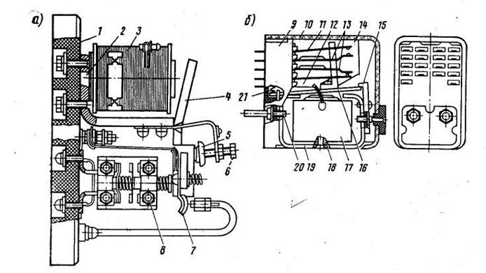
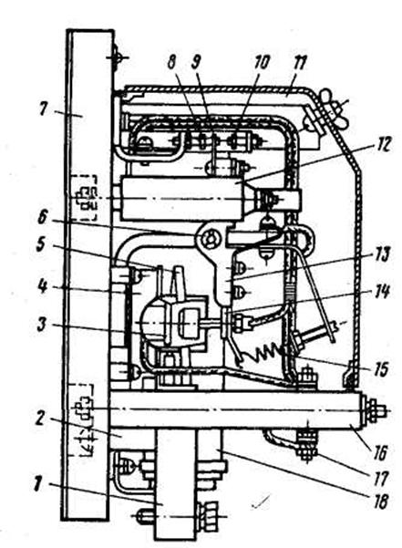
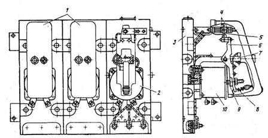
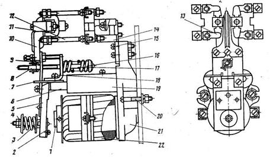
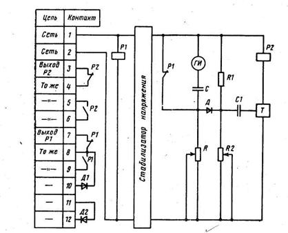
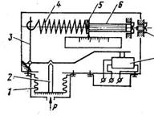
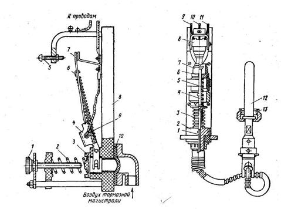
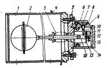

Реле выполняют на тепловозах самые различные функции в цепях управления, защиты, измерительных и т. д. Их можно разделить на реле токовые, напряжения, тепловые и т. д. по назначению: управления, защиты, автоматики, реле-датчики, реле-регуляторы, специальные.
Реле управления. У применяемых в цепях управления тепловозов реле серии Р-45М (рис. 73, а) все элементы, кроме панелей и катушек, взаимозаменяемы. Реле состоит из магнитной системы клапанного типа, контактов пальцевого 7 и мостикового 8, установленных на панели Л К магнитной системе реле относится ярмо 2, сердечник с катушкой 3 и подвижной якорь 4.
Реле управления:а типа Р-45М; б — типа ТРПУ-1;1 — панель; 2 — ярмо; 3 —катушка; 4 — якорь; 5 — пружина; 6 — болт регулировочный; 7 —пальцевый контакт; 8— мостиковый контакт; 9 — пластмассовый корпус; 10 — кожух; 11 — подвижная пластина замыкающего контакта; 12 — подвижная пластина размыкающего контакта; 13 — неподвижные пластины контактов; 14 — траверса; 15 — угольник; 16 — якорь; 17— катушка; 18 — сердечник; 19 — скоба; 20 — винт; 21 — пружина
На базе реле Р-45 изготовляется реле заземления Р-45-Г2, которое отличается от других типов реле данной серии тем, что имеет токовую катушку вместо катушки напряжения и механическую за щелку, удерживающую якорь во включенном состоянии. Ток срабатывания реле заземления регулируется величиной затяжки пружины 5.
Реле управления ТРПУ-1 изготовлено на базе универсальной серии реле РПУ-1. Оно состоит из скобы (магнитопро-вода) 19, катушки 17 с сердечником 18, якоря 16, замыкающих и размыкающих контактов. При прохождении тока по катушке якорь притягивается к сердечнику и через траверсу 14 происходит замыкание или размыкание контактов. После снятия напряжения пружина 21 устанавливает якорь в исходное положение, при этом замыкающие контакты размыкаются. Ход якоря ограничивается угольником 15.
Дифференциальное реле РД-3010 автоматически управляет контакторами ослабления возбуждения тяговых электродвигателей в зависимости от тока и напряжения на зажимах тягового генератора или выпрямительной установки. Магнитная система реле состоит из ярма 2, выполненного в виде скобы, сердечников 4,7 и якоря 5, поворачивающегося вокруг оси 9, установленной настойке 19. Якорь при обесточенных катушках пружиной 23 прижимается к упорному винту контактодержателя 21. На нижней полкеярма установлена катушка напряжения 3, на верхней — токовая 8.На токовую катушку подается сигнал, пропорциональный току тягового генератора, а на катушку напряжения—сигнал, пропорциональный напряжению тягового генератора. Реле имеет один замыкающий контакт с двойным разрывом, подвижные контакты 15 установлены на якоре, неподвижные 14 — на изоляционной колодке13. Контактная система закрыта прозрачным кожухом 12. Реле срабатывает под воздействием электромагнитного усилия, создаваемого катушкой напряжения, которому противодействует усилие токовой катушки и пружины. Соответственно при уменьшении тока в катушке напряжения и увеличении тока в токовой катушке доопределенных значений якорь 5 отпадает, и контакты размыкаются. Реле ограничения тока устанавливается на маневровых тепловозах ТЭМ2, ТЭМ1, ТЭ10 и служит для ограничения тока тягового генератора. На изоляционной панели 7 установлено электромагнитное реле с высоким коэффициентом возврата и резистор 18 с двумя ступенями. Реле имеет две катушки: напряжения 4 и токовую 5, надетые на сердечник. Катушка напряжения крепится непосредственно к панели. Токовая катушка выполнена в виде одного витка из медной шины, концы которого припаяны к массивным медным выводам 1, укрепленным на изоляционной планке 2.
Подвижная система реле состоит из облегченного рычага 13 с немагнитной планкой 14 и плунжерного якоря. Реле имеет жесткий двусторонний подвижной контакт. Для облегчения работы контактов применен дугогасительный контур, состоящий из резистора и двух конденсаторов. При наибольшем токе тягового генератора ток в токовой катушке наибольший, и ее усилие, преодолевая усилие пружины 15, поворачивает рычаг вокруг неподвижной оси, размыкая контакты. В зависимости от соотношения токов в катушках реле подвижной контакт занимает одно из пяти возможных положений чем регулируется ток возбуждения. Подробно описание работы реле дано при разборе системы возбуждения тягового генератора тепловоза ТЭМ2.
Реле боксования. Реле боксо-вания предназначены автоматически защищать тяговые электродвигатели тепловоза от разносного боксованияЗ В качестве реле боксования принимают реле типа РК,
Реле ограничения тока ПР-27АЗ: 1 — выводы токовой катушки; 2 — изоляционная планка; 3 — сердечник; 4 — катушка напряжения; 5 — токовая катушка; в — ось; 7 —панель; 8, 10 — неподвижные контакты; 9 — подвижной контакт; 11 — кожух;12 — конденсатор; 13 — рычаг; 14 — немагнитная планка; 15 — пружина; 16 — изоляционная колодка; 17 — контактные зажимы; 18 — резистор
На тепловозах 2ТЭ10Л, 2ТЭ10В, 2ТЭ10М, 2ТЭ116 реле боксования объединены в один блок, который получил название блок боксования. Блок боксования ББ-320А состоит из реле РК-221 и реле РК-231, соединенных, вместе шпильками, пропущенными через панель 3, и закрытых кожухом, который после настройки реле и проверки их работы пломбируется. Реле РК-221 представляет собой электромагнитный аппарат плунжерного типа, выполненный с разомкнутой магнитной системой.
Втягивающий якорь (плунжер) 9 укреплен на поворотном рычаге 6 из немагнитного материала. Контактная система реле имеет один размыкающий и один замыкающий контакты перекидного типа. Высокая чувствительность реле, необходимая для срабатывания в начале боксования, достигается путем облегчения массы, уменьшения трения, тщательной балансировки подвижной системы, а также уменьшения усилия возвратной пружины. Своевременное отпадание якоря реле после прекращения боксования для исключения большого снижения силы тяги тепловоза обеспечивается высоким коэффициентом возврата (отношением тока отключения к. току включения). Коэффициент возврата, равный 0,8—0,85, получен в результате выполнения реле с небольшим воздушным зазором между якорем и сердечником относительно общего воздушного" пути прохождения магнитного потока, благодаря чему при срабатывании реле не происходит существенного увеличения магнитного потока и, следовательно, усилия притяжения якоря. В результате этого для отпадания якоря реле достаточно небольшого уменьшения тока в его катушке.
В блоке боксования одно реле включается между зажимами ЯЯ первого и второго тяговых двигателей, второе — между зажимами ЯЯ третьего и четвертого, третье между зажимами ЯЯ пятого и шестого тяговых электродвигателей. При нормальной работе, т. е. когда двигатели не боксуют, разность потенциалов между точками подсоединения реле близка к нулю и по катушке реле практически ток не проходит. При боксовании одной из колесных пар, например первой, частота вращения якоря электродвигателя, соединенного с этой осью, быстро возрастает и вызывает увеличение противо-э. д. с. на зажимах этого электродвигателя. Потенциал точки ЯЯ первого электродвигателя уменьшится, и по катушке РБ1 потечет ток от точки ЯЯ второго электродвигателя к точке ЯЯ первого. Если боксует вторая колесная пара, то ток через катушку РБ1 потечет в обратную сторону, т. е. от зажима ЯЯ первого электродвигателя к зажиму ЯЯ второго. При срабатывании реле РБ своими контактами разрывает цепь питания катушки контактора ВВ или подает сигнал на уменьшение возбуждения тягового генератора.
Блок боксования ББ-320А:1 — реле РК-221; 2 — реле РК-231; 3 — панель; 4 — неподвижный контакт; 5 — замыкающий контакт; 6 — рычаг; 7 — ярмо; 8—регулировочная пружина; 9 — якорь; 10 —втягивающая катушка
Для задержки отключения поездных контактов после снятия возбуждения возбудителя и тягового генератора, для ступенчатого восстановления нагрузки тягового генератора после прекращения боксования, для обеспечения последовательности срабатывания реле переходов применяют электромагнитные реле времени типа РЭВ-800. Выдержка времени создается за счет наведения э. д. с. самоиндукции в алюминиевых демпфере и основании.
Выключение катушки приводит к появлению вихревых потоков в них и задерживает спадание магнитного потока в магнитопроводе. Это приводит к задержке отпадания якоря. Все узлы реле смонтированы на алюминиевом основании 21, имеющем два отверстия для крепления к корпусу аппаратной камеры. Неподвижная часть магнитопро-вода состоит из сердечника 1 и скобы 6. На сердечник надета катушка 22, на скобу — демпфер 19, выполненный в виде гильзы. На скобе укреплены угольник 18 и пластина 7, образуя опору якоря 5, вокруг которой осуществляется его вращение. На якоре укреплена планка 9, несущая изоляционную пластмассовую колодку 10 с подвижными контактами 11. Пластинки неподвижных контактов 13 закреплены шпильками 12 на изоляционной пластмассовой колодке 14, которая укреплена на основании 21 планкой 15.
Возврат якоря 5 в отключенное состояние осуществляется пружиной 16, опирающейся на угольник 18. Регулировку выдержки времени пролзводят изменением толщины немагнитной прокладки 2 (грубая) и затяжкой отжимной пружины 3 (плавная) при помощи гайки 4. Контактный узел реле позволяет путем переборки деталей получить любую комбинацию контактов в пределах существующего количества.
Реле времени РЭВ-800: 1 — сердечник' 2— немагнитная прокладка; 3— отжимная пружина; 4, 8— гайки; 5 — якорь; 6 —скоба: 7 — пластина: 9, 15 — планки; 10, 14 — изоляционные колодки; 11 — узел подвижного контакта; 12, 17 — шпилька; 13 — пластинки неподвижных контактов; 16 — возвратная пружина, 18 — угольник; 19— демпфер; 20 — болт; 21 — алюминиевое осювание; 22 — катушка
Полупроводниковое реле времени ВЛ-31: Р1, Р2 — реле; С, С1 — конденсаторы; Д. Д1, Д2 — диоды; ГИ — генератор импульсов; Г — триггер; R, Rl, R2 — резисторы.
Полупроводниковое реле времени типа ВЛ-31 применяется для управления контактором маслопрокачивающего насоса. Реле имеет один переключающий контакт без выдержки времени, один замыкающий и один размыкающий контакт с выдержкой времени. Конструкция реле обеспечивает визуальный отсчет выдержки времени без снятия оболочки. Выдержка времени отсчитывается с момента подачи напряжения питания. При подаче напряжения на выводы 1-й 2 срабатывает реле PL Триггер Т устанавливается в положение, при котором реле Р2 обесточено. Конденсатор С заряжается через резистор R, начинается отсчет времени.
Когда напряжение на конденсаторе достигает уровня опорного напряжения, снимаемого с делителя на резисторах R1 и R2, открывается диод Д, импульсы генератора ГИ проходят на вход триггера Т и устанавливают его в положение, при котором подается напряжение на реле Р2. Реле Р2 срабатывает и переключает выходные контакты. Выдержка времени заканчивается. При снятии напряжения питания реле возвращается в исходное состояние. Выдержка времени регулируется ступенчато путем изменения сопротивления резистора R, который выполнен в виде набора резисторов.
Реле давления масла РДК-3. Служит для защиты дизеля от пониженного давления масла в системе смазки и охлаждения. Реле состоит из корпуса, в нижней части которого расположен сильфон 1. Шток 2 сильфона упирается в рычаг 3, один конец которого упирается в кнопку микропереключателя 8, а ко второму крепится пружина 4. Второй конец пружины 4 закреплен на пробке 5, в которую ввернут регулировочный винт 6. При повышении давления масла выше установленного по шкале значения сильфон сжимается, шток 2 лавит на пыб, который, преодолевая усилие пружины 4, поворачивается против часовой стрелки. При этом рычаг освобождает кнопку микровыключателя S, и его контакты замкнутся. При понижении давления шток сильфона опустится вниз, и рычаг 3 под действием пружины 4 повернется по часовой •стрелке, при этом нажмется кнопка микровыключателя, контакты которого разомкнутся. Реле настраивают путем изменения затяжки пружины 4, вращением ходового винта 6. После настройки ходовой винт 6 стопорится пробкой 7. Диапазон настройки реле на срабатывание 0—0,25 МПа.
Кинематическая схема реле давления масла РДК-3: 1 — сильфон; 2 — шток; 3 — рычаг; 4 — пружина; 5, 7 — пробки; 6 — винт ходовой; 8 — микровыключатель
Реле давления воздуха АК-11Б предназначено для автоматического управления пуском компрессора в зависимости от давления сжатого воздуха в тормозной магистрали. Реле давления воздуха исключает возможность включения нагрузки при недостаточном давлении воздуха в тормозной магистрали. Под действием давления мембрана 10, изготовленная из листовой морозостойкой резины, прогибается и давит на шток 3, который, преодолевая усилие сжатой пружины 2, перемещает рычаг 4. Поворачиваясь вокруг оси, рычаг 4 и пружина 6 перебрасывают планку с подвижным контактом 7 от неподвижного контакта на винт-контакт 5, т. е. произойдет размыкание контактов. При снижении давления воздуха в тормозной магистрали усилием пружины шток возвращается в исходное положение, вновь замыкая контакты. Давление замыкания регулируется винтом 1, а давление размыкания — винтом 5, при этом раствор контактов должен быть в пределах 6—12 мм. Перепад давления, т. е. разница давления размыкания и замыкания, составляет 0,15—0,18 МПа.
Комбинированное температурное реле РКД2 предназначено для защиты дизеля от превышения температуры выше допустимой в водяной и масляной системах охлаждения дизеля. Реле изотов-лено на базе двух универсальных чувствительных элементов температуры, которые вмонтированы в корпус.
Термобаллон 12, сильфон 3 и капиллярная трубка 1 представляют собой герметически замкнутую термосистему, заполненную жидкостью с большим коэффициентом объемного расширения. При повышении температуры в системе охлаждения увеличивается .давление в термосистеме и сильфон 3, растягиваясь и преодолевая •сопротивлеие пружины 5, перемещает толкатель 4, который нажимает на кнопку микровыключателя 8, переключая его контакты.
При снижении температуры в системе охлаждения сильфон под действием пружин сжимается, и толкатель отходит от кнопки микровыключателя, производя обратное переключение контактов.
Реле давления воздуха АК-11Б: 1 — регулировочный винт; 2 — регулировочная пружина; 3 — шток; 4 — рычаг; 5 — винт-контакт; б — пружина; 7 — подвижный контакт; 8— панель; 9— ось рычага; 10 — мембрана
Температурное реле РКД2: 1 — капиллярная трубка; 2— корпус реле; 3 — сильфон; 4 — толкатель; 5 — пружина; 6 — стопорный винт; 7 — штуцер; 8— микровыключатель; 9, 10, 11 — выводы; 12 — термобаллон; 13 — накидная гайка
Реле уровня воды ДРУ-1 служит для контроля нижнего уровня воды в расширительном баке системы охлаждения дизеля. Принцип работы реле основан на изменении положения поплавка 2 под воздействием выталкивающей силы воды в расширительном баке. При снижении уровня воды поплавок 2 опускается, и рычаг 16 освобождает кнопку микровыключателя 11. Контакты микровыключателя переключаются и замыкают цепь сигнальной лампы, установленной на пульте управления машиниста. При повышении уровня воды поплавок поднимется, и рычаг 16 нажмет на кнопку микровыключателя 11, контакты микровыключателя разомкнутся и разорвут цепь сигнальной лампы. Уровень срабатывания реле регулируют болтом 13, ввернутым в рычаг поплавка. Для настройки необходимо опустить поплавок вниз так, чтобы рычаг 16 уперся в верхний срез кронштейна 15, затем, вворачивая болт 13, добиться переключения контактов микропереключателя, после чего довернуть болт еще на '/з оборота и в этом положении болт зафиксировать контргайкой.
Реле уровня воды ДРУ-1: 1 — ограждение; 2 — поплавок; 3 — сильфон; ■4 — водяной бак; 5, 8 — фланцы; 6 — крышка; 7 — кольцо пружинное; 9 — корпус; 10 — стопорный винт; 11 — микровыключатель; 12 — крышка; 13 — регулировочный болт; 14 — уплотнение; 15 — кронштейн; 16 — рычаг